请家长/老师完成 · 大约一分钟
按分组表填写，例如 Kid03。不要写姓名。
可选 — 记录孩子看向哪里。跳过也不影响游戏。
可选 — 给老师演示用 AI 制作新场景（做的场景不会进入实验）。正式实验请点「跳过」。
看看发生了什么 ↑
选一条路走过去 ↓
如果你是
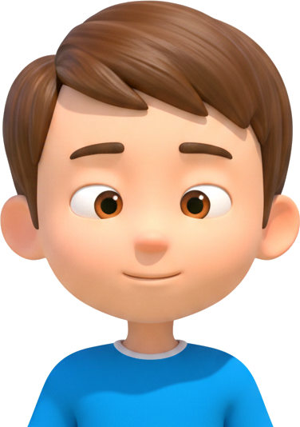
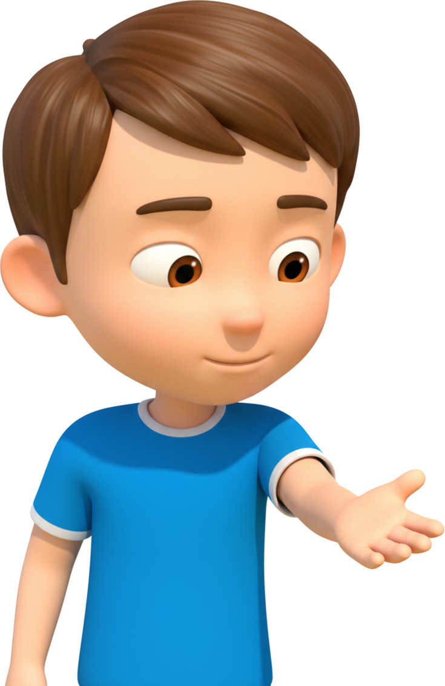
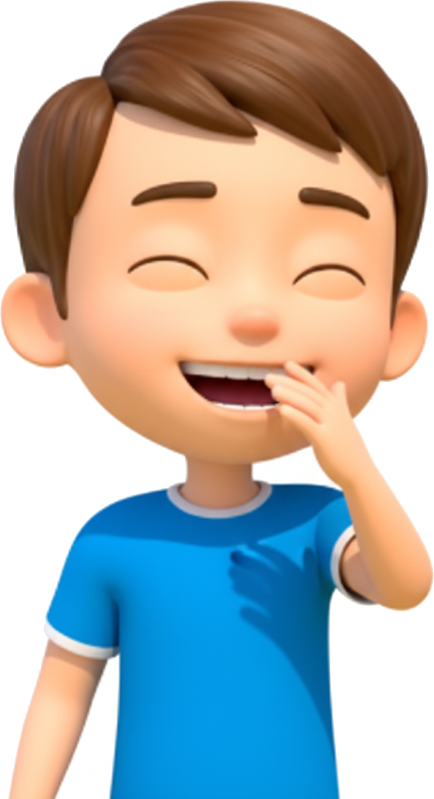
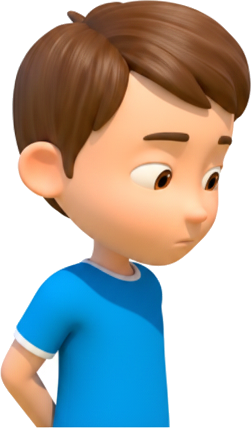
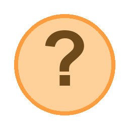
看看你做了什么……
你觉得
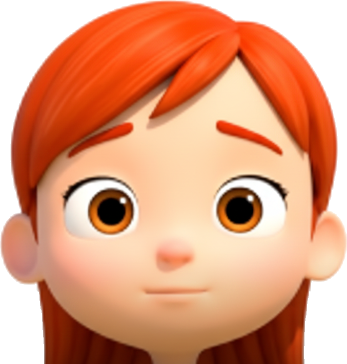
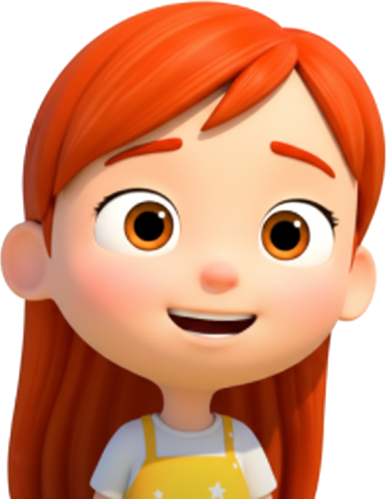
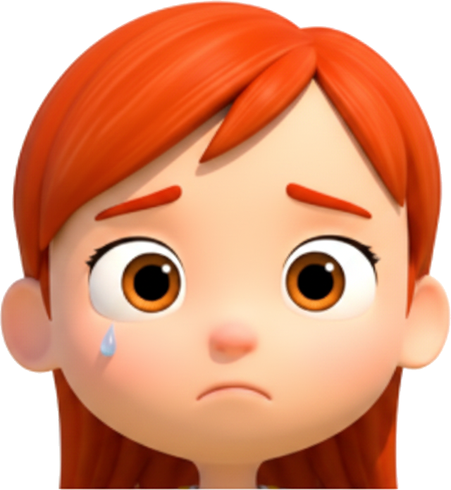
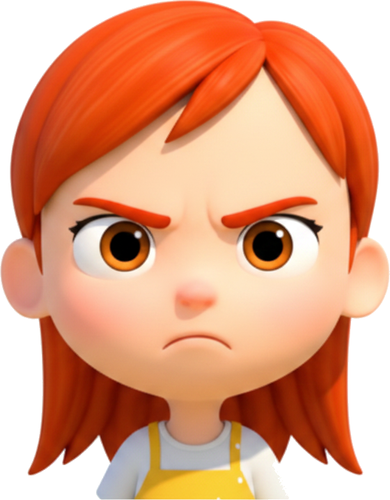
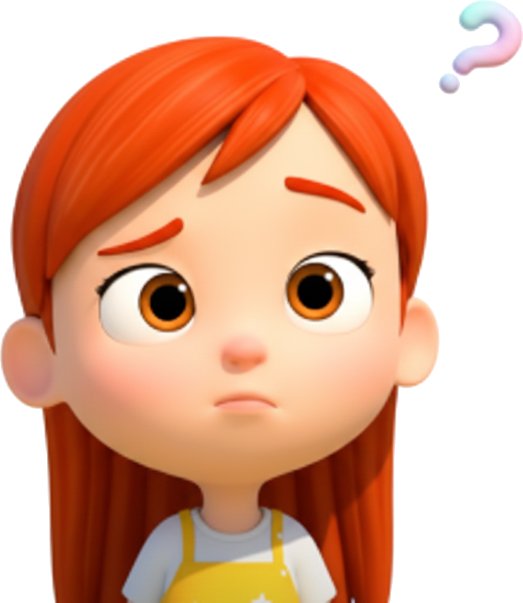
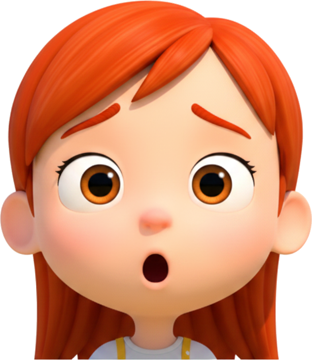
准备好看看会发生什么了吗？
跟你想的一样吗？
看完以后，你觉得 其实是什么感觉？
下次遇到类似情况，你是 你会怎么做？
你的故事树 🌳
孩子能看到几个选项
家长/老师设置 · 下一个场景生效
孩子的预测，以及孩子看向哪里
关注区域为近似值 — 基于摄像头视线估计，只显示大致区域，不是精确位置。